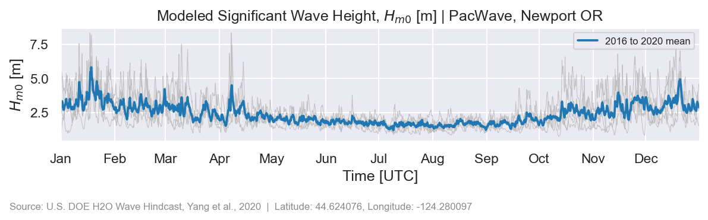
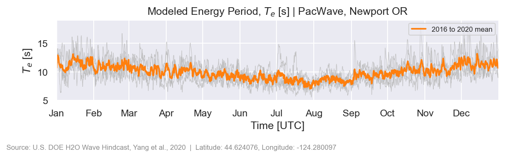
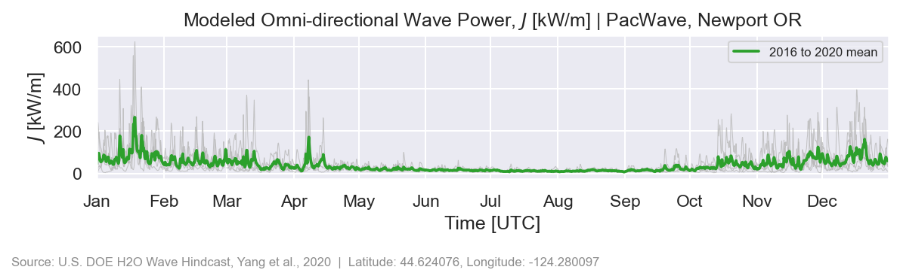
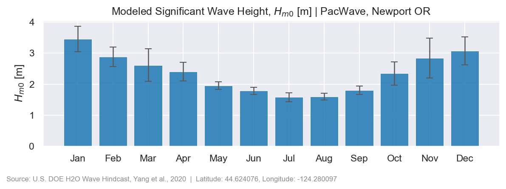
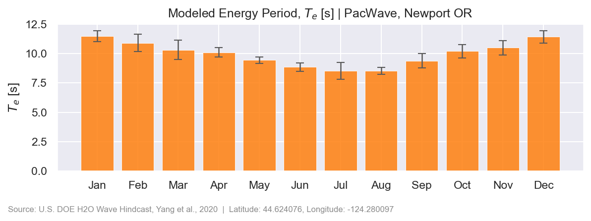
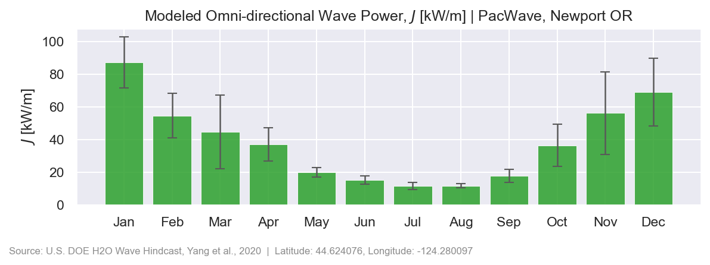
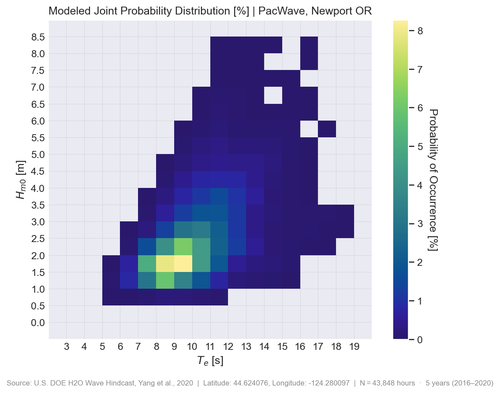
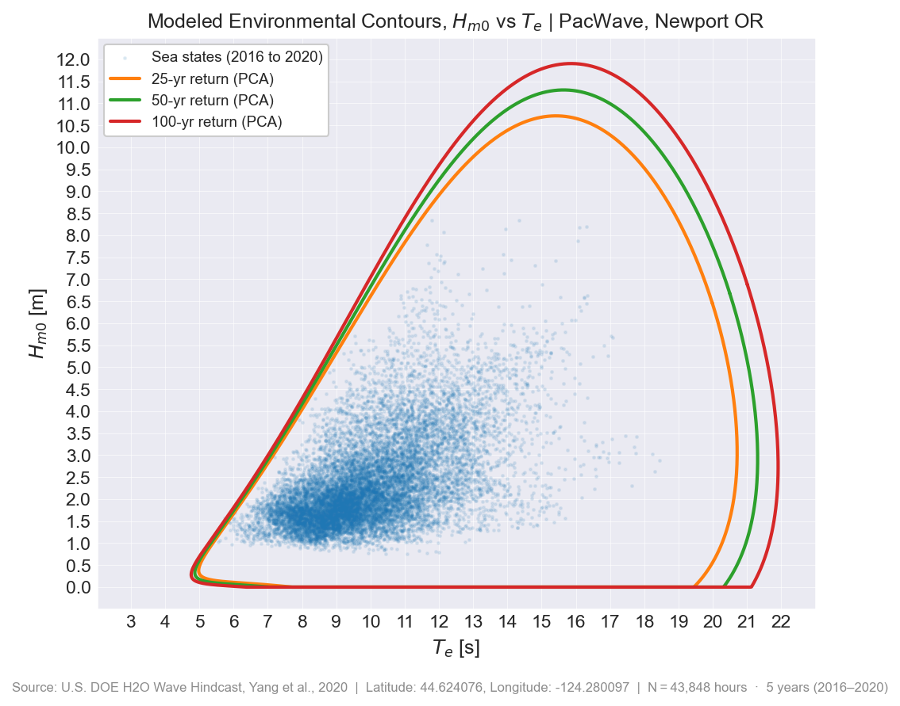

Wave Energy¶
Ocean waves have an estimated 1,400 TWh/yr of technical energy potential across the U.S. EEZ, equivalent to 34% of U.S. electricity generation [@general_kilcher2021_marine]. The U.S. Department of Energy's Hydropower and Hydrokinetic Office (H2O) produced a 42-year, high-resolution hindcast covering all U.S. coastal and offshore waters to map that resource in detail. The data are freely accessible through the Marine Energy Atlas, a Python API, and raw HDF5 files on AWS S3.
What is a hindcast?
A hindcast is a numerical model simulation that estimates past wave conditions over a defined area and time period using historical forcing and boundary conditions. It reconstructs how conditions varied over time and space across a much larger area than can be captured by real-world measurements alone. Hindcasts are particularly valuable for marine energy resource characterization because measured data are often very sparse in both time and location; without a hindcast, the available observations may be too limited to fully describe the resource or operating conditions at a site. By providing a spatially and temporally continuous record, hindcasts help fill those gaps and support resource assessment, site screening, engineering design, and evaluation of long-term variability.
Regional Datasets¶
West Coast¶
[chicago@wu2020_west_coast]
- Grid points: 699,904
- File size: ~71.7 GB per year
- Total archive: ~2.9 TB
- Period: 1979–2020 · 42 annual files
- Version:
v1.0.1
Spatiotemporal variables (9)
| Variable | Description | IEC name | SWAN name | Units | Dimensions | Type |
|---|---|---|---|---|---|---|
directionality_coefficient |
Directionality coefficient | d | 2,928 × 699,904 | float32 |
||
energy_period |
Energy period | T_e,T_-10 | TMM10 | s | 2,928 × 699,904 | float32 |
maximum_energy_direction |
Peak wave direction (nautical convention) | PDIR | degr | 2,928 × 699,904 | float32 |
|
mean_absolute_period |
Mean absolute wave period - equivalent to T_m01 | PER | s | 2,928 × 699,904 | float32 |
|
mean_wave_direction |
Mean wave direction (nautical convention) | DIR | degr | 2,928 × 699,904 | float32 |
|
omni-directional_wave_power |
Omnidirectional wave power | J | W/m | 2,928 × 699,904 | float32 |
|
peak_period |
Relative peak period of the variance density spectrum | T_p | RTP | s | 2,928 × 699,904 | float32 |
significant_wave_height |
Significant wave height | H_m0 | HSIGN | m | 2,928 × 699,904 | float32 |
spectral_width |
Spectral width | epsilon_0 | 2,928 × 699,904 | float32 |
Metadata (6 fields)
| Field | Type |
|---|---|
water_depth |
float32 |
latitude |
float32 |
longitude |
float32 |
distance_to_shore |
float32 |
timezone |
int16 |
jurisdiction |
str[20] |
East Coast¶
[chicago@ahn2021_east_coast]
- Grid points: 2,635,135
- File size: ~316.2 GB per year
- Total archive: ~13.0 TB
- Period: 1979–2020 · 42 annual files
- Version:
v1.0.1
Spatiotemporal variables (11)
| Variable | Description | IEC name | SWAN name | Units | Dimensions | Type |
|---|---|---|---|---|---|---|
directionality_coefficient |
Directionality coefficient | d | 2,928 × 2,635,135 | float32 |
||
energy_period |
Energy period | T_e,T_-10 | TMM10 | s | 2,928 × 2,635,135 | float32 |
maximum_energy_direction |
Direction of maximum directionally resolved wave power (nautical convention) | theta_J | deg | 2,928 × 2,635,135 | float32 |
|
mean_absolute_period |
Mean absolute wave period - equivalent to T_m01 | PER | s | 2,928 × 2,635,135 | float32 |
|
mean_wave_direction |
Mean wave direction (nautical convention) | DIR | deg | 2,928 × 2,635,135 | float32 |
|
mean_zero-crossing_period |
Mean absolute zero-crossing period | T_Z,T_02 | TM02 | s | 2,928 × 2,635,135 | float32 |
omni-directional_wave_power |
Omnidirectional wave power | J | W/m | 2,928 × 2,635,135 | float32 |
|
peak_period |
Relative peak period of the variance density spectrum | T_p | RTP | s | 2,928 × 2,635,135 | float32 |
peak_period_direction |
Peak wave direction (nautical convention) | PDIR | deg | 2,928 × 2,635,135 | float32 |
|
significant_wave_height |
Significant wave height | H_m0 | HSIGN | m | 2,928 × 2,635,135 | float32 |
spectral_width |
Spectral width | epsilon_0 | 2,928 × 2,635,135 | float32 |
Hawaii¶
[chicago@li2021_hawaii]
- Grid points: 700,414
- File size: ~81.9 GB per year
- Total archive: ~2.6 TB
- Period: 1979–2010 · 32 annual files
- Version:
v1.0.0
Incomplete archive
Files for 2011–2020 are not available on AWS S3 or HSDS.
Spatiotemporal variables (10)
| Variable | Description | IEC name | SWAN name | Units | Dimensions | Type |
|---|---|---|---|---|---|---|
directionality_coefficient |
Fraction of total wave energy travelling in the "direction of maximum wave power" direction | d | description: Fraction of total wave energy travelling in the "direction of maximum wave power" direction | 2,920 × 700,414 | float32 |
|
energy_period |
Spectral width characterizes the relative spreading of energy in the wave spectrum. Large values indicate a wider spectral peak | T_e | TM02 | s | 2,920 × 700,414 | float32 |
maximum_energy |
Maximum directionally resolved wave energy | J_sigma_jdmax | jdmax | W/m | 2,920 × 700,414 | float32 |
maximum_energy_direction |
The direction from which the most wave energy is travelling | Jsigma_Jmax | description: The direction from which the most wave energy is travelling | deg | 2,920 × 700,414 | float32 |
mean_absolute_period |
Resolved Spectral Moment (m_0/m_1) | T_p | PER | s | 2,920 × 700,414 | float32 |
mean_wave_direction |
Direction Normal to the Wave Crests | Sigma | DIR | deg | 2,920 × 700,414 | float32 |
omni-directional_wave_power |
Total wave energy flux from all directions | J | description: Total wave energy flux from all directions | W/m | 2,920 × 700,414 | float32 |
peak_period |
The period associated with the maximum value of the wave energy spectrum | T_p | RTP | s | 2,920 × 700,414 | float32 |
significant_wave_height |
Calculated as the zeroth spectral moment (i.e., H_m0) | H_s | HSIGN | m | 2,920 × 700,414 | float32 |
spectral_width |
Spectral width characterizes the relative spreading of energy in the wave spectrum. Large values indicate a wider spectral peak | epsilon_o | description: Spectral width characterizes the relative spreading of energy in the wave spectrum. Large values indicate a wider spectral peak | 2,920 × 700,414 | float32 |
Metadata (6 fields)
| Field | Type |
|---|---|
latitude |
float32 |
longitude |
float32 |
distance_to_shore |
float32 |
timezone |
int16 |
jurisdiction |
str[7] |
water_depth |
float32 |
Alaska¶
[chicago@garcia_medina2021_us_alaska]
- Grid points: 3,894,283
- File size: ~399.1 GB per year
- Total archive: ~16.4 TB
- Period: 1979–2020 · 42 annual files
- Version:
v1.0.1
Spatiotemporal variables (9)
| Variable | Description | IEC name | SWAN name | Units | Dimensions | Type |
|---|---|---|---|---|---|---|
directionality_coefficient |
Directionality coefficient | d | 2,928 × 3,894,283 | float32 |
||
energy_period |
Energy period | T_e,T_-10 | TMM10 | s | 2,928 × 3,894,283 | float32 |
maximum_energy_direction |
Direction of maximum directionally resolved wave power (nautical convention) | theta_J | degr | 2,928 × 3,894,283 | float32 |
|
mean_absolute_period |
Mean absolute wave period - equivalent to T_m01 | PER | s | 2,928 × 3,894,283 | float32 |
|
mean_wave_direction |
Mean wave direction (nautical convention) | DIR | degr | 2,928 × 3,894,283 | float32 |
|
omni-directional_wave_power |
Omnidirectional wave power | J | W/m | 2,928 × 3,894,283 | float32 |
|
peak_period |
Relative peak period of the variance density spectrum | T_p | RTP | s | 2,928 × 3,894,283 | float32 |
significant_wave_height |
Significant wave height | H_m0 | HSIGN | m | 2,928 × 3,894,283 | float32 |
spectral_width |
Spectral width | epsilon_0 | 2,928 × 3,894,283 | float32 |
Metadata (6 fields)
| Field | Type |
|---|---|
latitude |
float32 |
longitude |
float32 |
timezone |
float32 |
distance |
float32 |
jurisdiction |
str[7] |
water_depth |
float32 |
Guam and Northern Mariana Islands¶
[chicago@garcia_medina2023_us_guam_and_cnmi]
- Grid points: 461,465
- File size: ~47.3 GB per year
- Total archive: ~1.9 TB
- Period: 1979–2020 · 42 annual files
- Version:
v1.0.0
Spatiotemporal variables (9)
| Variable | Description | IEC name | SWAN name | Units | Dimensions | Type |
|---|---|---|---|---|---|---|
directionality_coefficient |
Directionality coefficient | d | 2,928 × 461,465 | float32 |
||
energy_period |
Energy period | T_e,T_-10 | TMM10 | s | 2,928 × 461,465 | float32 |
maximum_energy_direction |
Direction of maximum directionally resolved wave power (nautical convention) | theta_J | degr | 2,928 × 461,465 | float32 |
|
mean_absolute_period |
Mean absolute wave period - equivalent to T_m01 | PER | s | 2,928 × 461,465 | float32 |
|
mean_wave_direction |
Mean wave direction (nautical convention) | DIR | degr | 2,928 × 461,465 | float32 |
|
omni-directional_wave_power |
Omnidirectional wave power | J | W/m | 2,928 × 461,465 | float32 |
|
peak_period |
Relative peak period of the variance density spectrum | T_p | RTP | s | 2,928 × 461,465 | float32 |
significant_wave_height |
Significant wave height | H_m0 | HSIGN | m | 2,928 × 461,465 | float32 |
spectral_width |
Spectral width | epsilon_0 | 2,928 × 461,465 | float32 |
Metadata (6 fields)
| Field | Type |
|---|---|
latitude |
float32 |
longitude |
float32 |
timezone |
int16 |
depth |
float32 |
distance_to_shore |
float32 |
jurisdiction |
str[24] |
Puerto Rico¶
[chicago@ahn2021_us_gulf_of_mexico]
Part of the Gulf of America dataset — same grid, variables, and archive period.
Gulf of America¶
[chicago@ahn2021_us_gulf_of_mexico]
- Grid points: 4,656,637
- File size: ~572.8 GB per year
- Total archive: ~23.5 TB
- Period: 1979–2020 · 42 annual files
- Version:
v1.0.1
Spatiotemporal variables (11)
| Variable | Description | IEC name | SWAN name | Units | Dimensions | Type |
|---|---|---|---|---|---|---|
direction_of_maximum_directionally_resolved_wave_power |
Direction of maximum directionally resolved wave power (nautical convention) | theta_J | degr | 2,928 × 4,656,637 | float32 |
|
directionality_coefficient |
Directionality coefficient | d | 2,928 × 4,656,637 | float32 |
||
energy_period |
Energy period | T_e,T_-10 | TMM10 | s | 2,928 × 4,656,637 | float32 |
mean_absolute_period |
Mean absolute wave period - equivalent to T_m01 | PER | s | 2,928 × 4,656,637 | float32 |
|
mean_wave_direction |
Mean wave direction (nautical convention) | DIR | degr | 2,928 × 4,656,637 | float32 |
|
mean_zero-crossing_period |
Mean absolute zero-crossing period | T_z,T_02 | TM02 | s | 2,928 × 4,656,637 | float32 |
omnidirectional_wave_power |
Omnidirectional wave power | J | W/m | 2,928 × 4,656,637 | float32 |
|
peak_period |
Relative peak period of the variance density spectrum | T_p | RTP | s | 2,928 × 4,656,637 | float32 |
peak_wave_direction |
Peak wave direction (nautical convention) | PDIR | degr | 2,928 × 4,656,637 | float32 |
|
significant_wave_height |
Significant wave height | H_m0 | HSIGN | m | 2,928 × 4,656,637 | float32 |
spectral_width |
Spectral width | epsilon_0 | 2,928 × 4,656,637 | float32 |
Metadata (6 fields)
| Field | Type |
|---|---|
latitude |
float32 |
longitude |
float32 |
timezone |
int16 |
depth |
float32 |
distance_to_shore |
float32 |
jurisdiction |
str[19] |
Limitations¶
Important Limitations
- Hindcast, not measurements. Model output does not replace in-situ buoy observations.
- Not design-grade by itself. Class 3 assessments require site-specific measurements and validated local modeling.
- Skill varies by region. Validation was performed against NOAA buoys for selected sites; accuracy is generally higher offshore and lower in complex nearshore areas, near domain boundaries, and ice-affected regions (Alaska).
Data Access¶
Wave energy resource characteizion data is available in three data products that serve different needs. Start with the Atlas for visual exploration, then move to the API or raw files as your analysis deepens.
| I want to… | Use this | Reference |
|---|---|---|
| Explore the resource spatially, compare regions | Marine Energy Atlas | Atlas guide |
| Download time series for up to ~100 sites | us-marine-energy-resource-python or MHKiT wave.io.hindcast |
Getting Started |
| Download or slice the full archive | HSDS or AWS S3 | HSDS Setup · AWS S3 |
| Look up variable definitions and units | Variable reference | Wave Variables |
Start at the marine energy atlas
- Marine Energy Atlas: zero setup, browser-only. Best for stakeholders, initial site screening, and non-programmers.
- MHKiT: 5-line Python queries for point or multi-site time series. Best for feasibility studies and comparing candidate sites.
- HSDS / S3 raw files: direct HDF5 access. Best for bulk extraction, many sites, large regional studies, and reproducible pipelines. Annual files range from ~87 GB (West Coast) to ~600 GB (Gulf of America and Puerto Rico); the full archive is TB-scale.
Site Analysis Example: PacWave South¶
The visualizations below walk through a Class 2 feasibility workflow at a single grid point near the PacWave wave energy test site off Newport, Oregon (44.62°N, 124.28°W) — a U.S. DOE-funded open-water test facility on the West Coast.
What this example covers:
- Pulling a multi-year site time series with MHKiT
- Seasonal and inter-annual variability of key resource parameters
- Monthly wave climate summaries
- A wave scatter diagram (\(H_{m0}\) × \(T_e\) joint probability)
- Environmental contours for extreme sea-state design inputs (25, 50, and 100-year return periods)
Wave Conditions Time Series¶
The three plots below show 3-hour hindcast time series at PacWave for 2016 to 2020. Each year is drawn as a grey trace and the 5-year mean is shown in color. Variables are plotted separately so seasonal patterns are easy to read.
{kind=link}

{kind=link}

{kind=link}

Monthly Wave Climate¶
The bar charts below show the monthly mean and inter-annual spread (error bars = ±1 std across years) for each wave parameter at PacWave, capturing the strong Pacific Northwest seasonal signal.
{kind=link}

{kind=link}

{kind=link}

Resource Matrix and Environmental Contours¶
The joint probability distribution (JPD) maps how often each \(H_{m0}\) and \(T_e\) combination occurs, binned at \(0.5\,\text{m} \times 1\,\text{s}\). The environmental contours (PCA method) define the extreme sea state envelope at 25, 50, and 100-year return periods, providing design load inputs per IEC 62600-101 [@iec_62600_101].
{kind=link}

{kind=link}

Resource Characterization (IEC/TS 62600-101)¶
IEC/TS 62600-101 [@iec_62600_101] defines three levels of wave resource assessment — think of them as progressively deeper stages of a development project:
| IEC class | What you are doing | Hindcast supports? | Best access path |
|---|---|---|---|
| Class 1 — Reconnaissance | Screening regions, comparing broad areas, identifying candidate sites | ✅ Yes | Marine Energy Atlas |
| Class 2 — Feasibility | Site time series, seasonal profiles, scatter diagrams, early extreme-value inputs | ✅ With caveats | MHKiT or raw H5 |
| Class 3 — Design | Device engineering, array layout, certification-grade assessment | ❌ Not alone | Site measurements + validated local modeling |
Class 1: Reconnaissance¶
The Marine Energy Atlas displays time-averaged wave energy resource parameters (significant wave height, wave power, energy period) across all hindcast domains. Grid cells are color-coded by magnitude and a point-query tool returns summary statistics for any selected location.
Class 2: Feasibility¶
A Class 2 assessment derives site-specific statistics from the full time series. The hindcast provides all six IEC/TS 62600-101 primary resource parameters:
- Significant wave height (\(H_{m0}\)): mean height of the largest one-third of waves
- Energy period (\(T_e\)): spectral period weighted toward low-frequency components; preferred for wave power calculations
- Peak period (\(T_p\)): period at the dominant spectral peak
- Mean zero-crossing period (\(T_z\)): average zero-crossing period derived from spectral moments
- Omni-directional wave power (\(J\)): total wave energy flux from all directions [W/m]
- Directionality coefficient (\(d\)): fraction of wave power arriving from the dominant direction
Point queries can be made using MHKiT:
from mhkit.wave.io.hindcast.hindcast import request_wpto_point_data
# PacWave site near Newport, OR
lat_lon = (44.624076, -124.280097)
# Fetch one year of significant wave height and energy period
Hm0, meta = request_wpto_point_data("3-hour", "significant_wave_height", lat_lon, [2005])
Te, meta = request_wpto_point_data("3-hour", "energy_period", lat_lon, [2005])
MHKiT is ideal for up to ~100 sites. For larger studies, switch to HSDS or S3 bulk access:
from rex import ResourceX
wave_file = '/nrel/US_wave/West_Coast/West_Coast_wave_2005.h5'
with ResourceX(wave_file, hsds=True) as f:
meta = f.meta
time_index = f.time_index
Hm0 = f['significant_wave_height']
J = f['omni-directional_wave_power']
Prerequisites
See Getting Started for HSDS/S3 setup.
Next Steps¶
- Access the data: see Getting Started for HSDS/S3 setup and code examples using us-marine-energy-resource-python, MHKiT, and rex.
- Explore variables: see Wave Variables for full IEC and SWAN definitions of each output parameter.
- Read the references: see References for the publications behind each regional dataset.